Proposed Business Model
Strategic Concept: The Reservation-Backed AI Factory
The proposed model changes what Supermicro sells and when commitments occur. Under the current model, Supermicro sells hardware and bears the risk between purchase and delivery. Under the proposed model, Supermicro sells contracted AI capacity, measured in megawatts, secured by a Master Capacity Agreement and a deposit. Supply, build slots, and capital are released only after three gates clear: verified end use, a qualifying site readiness score, and covered supply.
The concept draws on three bodies of evidence:
- Contracted demand. Forecast sharing becomes credible when contracts place commitment on the buyer, because buyers otherwise hold an incentive to inflate forecasts (Cachon & Lariviere, 2001). Deposit-backed reservations apply that principle and dampen the bullwhip effect (Lee et al., 1997).
- Market scale and constraint. Data center investment requirements are projected at USD 6.7 trillion worldwide by 2030 (McKinsey & Company, 2025). Supermicro's own experience shows that customer power, cooling, and network readiness now constrain revenue timing (The Motley Fool, 2026).
- Servitization. Manufacturers add value and competitive differentiation by extending from products into services (Vandermerwe & Rada, 1988). Liquid-cooled AI clusters suit that transition because the systems require specialized operation throughout service life.
Existing assets make the model feasible. DCBBS already provides modular blueprints, and Supermicro already operates manufacturing in Silicon Valley, Taiwan, the Netherlands, and Malaysia (Super Micro Computer, Inc., 2026a; HPCwire, 2026). The transformation therefore redirects existing capabilities rather than constructing a new company.
Proposed Process Model
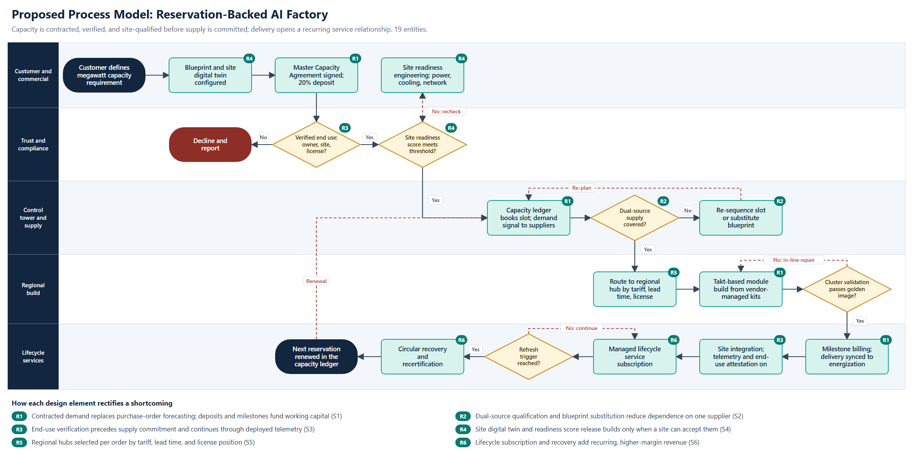
Process logic. The proposed model contains 19 entities across five lanes.
- Commercial commitment. A customer defines a megawatt requirement, and a blueprint and site digital twin are configured. The customer then signs a Master Capacity Agreement with a 20% deposit.
- Trust gate. End-use verification confirms beneficial owner, physical site, and license position. Failure ends the transaction with a decline and report.
- Site gate. A digital-twin readiness score evaluates power, cooling, and networking. A site below threshold enters readiness engineering rather than the production queue.
- Control tower. A capacity ledger books the build slot and transmits a firm demand signal to suppliers. Uncovered supply triggers re-sequencing or a substitute blueprint from a qualified second source.
- Regional build. Each order routes to the hub with the best combination of tariff exposure, lead time, and license position. Takt-based module production draws on vendor-managed kits, and cluster validation precedes release.
- Synchronized delivery. Milestone billing and shipment align with site energization. Integration activates telemetry and recurring end-use attestation.
- Lifecycle. A managed service subscription continues until a refresh trigger. Circular recovery recertifies retired equipment, and the next reservation returns to the capacity ledger.
Comparison of Models
| Dimension | Current model | Proposed model | Shortcoming addressed |
|---|---|---|---|
| Product sold | Hardware configuration | Contracted megawatts of AI capacity | S6 |
| Demand signal | Purchase order and forecast | Deposit-backed reservation | S1 |
| Working capital source | Supermicro balance sheet, debt, and equity | Customer deposits, milestones, vendor-managed inventory | S1 |
| Supply posture | Single dominant source, expedite on shortage | Back-to-back commitments, dual-source blueprints | S2 |
| Compliance | Document screening at order | Physical verification before commitment, telemetry after delivery | S3 |
| Site readiness | Tested after manufacture | Scored before supply is committed | S4 |
| Footprint decision | San Jose by default | Per-order regional routing | S5 |
| Post-sale relationship | Reactive break-fix | Subscription and circular recovery | S6 |
Advantages. The redesign reverses the order of risk and commitment. Capital is released after verification rather than before. Compliance moves from a clerical step to a design control. Finished goods no longer wait on unprepared sites, because readiness determines the build slot. Recurring service revenue also reduces reliance on deal mix.
Risks acknowledged. Large buyers may resist deposits, particularly while competing vendors offer alternatives. Second-source GPU platforms may not satisfy all workloads. Telemetry-based attestation requires customer consent and legal review in each jurisdiction. The financial analysis therefore includes revenue attrition and a pricing concession rather than assuming costless adoption.
Cost Analysis of the Proposed Model
Method and Assumptions
The cost analysis compares two three-statement projections for FY2027E to FY2031E, both starting from reported FY2026 balances. All projected figures are illustrative analyst estimates, not company guidance. The accompanying Excel workbook documents each input and basis, and every Power BI value traces to a workbook calculation.
| Assumption | Current model | Proposed model, FY2027E to FY2031E |
|---|---|---|
| FY2027E revenue | USD 68.5 billion, the midpoint of USD 65 billion to USD 72 billion guidance (Super Micro Computer, Inc., 2026b) | Same hardware base; 0% to 2% attrition from reservation terms |
| Later revenue growth | 20%, 12%, 8%, 6% | Same before attrition |
| Hardware gross margin | 10.5% | 10.6% rising to 11.45%, net of pricing concession |
| Service revenue | None modeled separately | 0.4% rising to 3.5% of hardware revenue, at 25% rising to 40% gross margin |
| Days inventory (ending balance) | 110 falling to 100 | 105 falling to 60 |
| Days sales outstanding | 55 | 55 falling to 45 |
| Days payables outstanding | 25 | 25 rising to 32 |
| Revenue under reservation | None | 15% rising to 70%; 20% deposit; six-month average lead time |
Days metrics use ending balances over annual flows. On that basis, FY2026 shows 135 inventory days and a 169-day cycle, which differs from the company-reported quarterly basis in Figure 3.
Investment Required
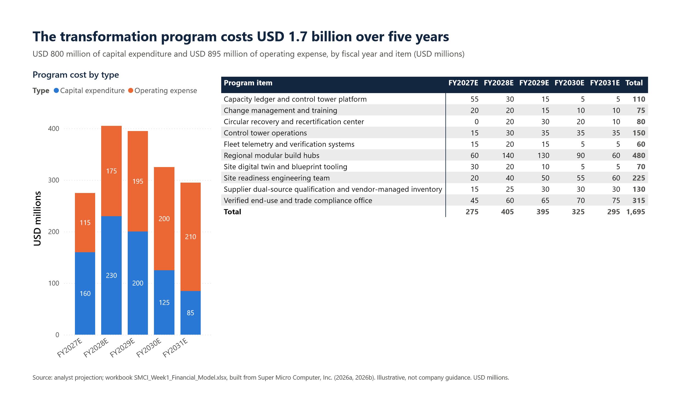
Analysis. The program costs USD 1.695 billion over five years: USD 800 million of capital expenditure and USD 895 million of operating expense. Regional modular build hubs form the largest item at USD 480 million, followed by the verified end-use and trade compliance office at USD 315 million. The compliance allocation is deliberately large, because S3 carries the greatest potential consequence for the company. Spending peaks in FY2028E at USD 405 million, approximately 0.5% of projected revenue.
Pro Forma Financial Statements
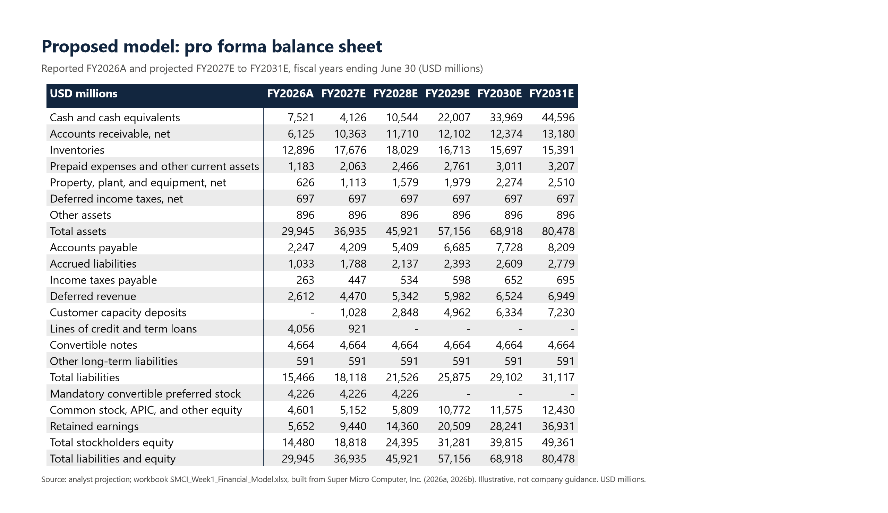
Analysis. The new liability line, customer capacity deposits, reaches USD 7.2 billion by FY2031E and funds a meaningful share of working capital. Inventories peak at USD 18.0 billion in FY2028E and then decline despite continued revenue growth. Loans are repaid by FY2028E. The mandatory convertible preferred stock converts to common equity in FY2029E according to the terms of the instrument. Assets equal liabilities plus equity in every year and in both models.
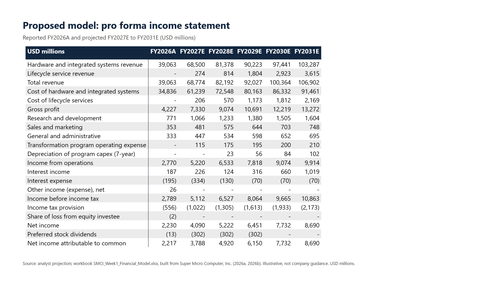
Analysis. Program costs appear as separate lines so that the investment remains visible. Income from operations reaches USD 9.9 billion in FY2031E, and lifecycle services contribute USD 3.6 billion of revenue.
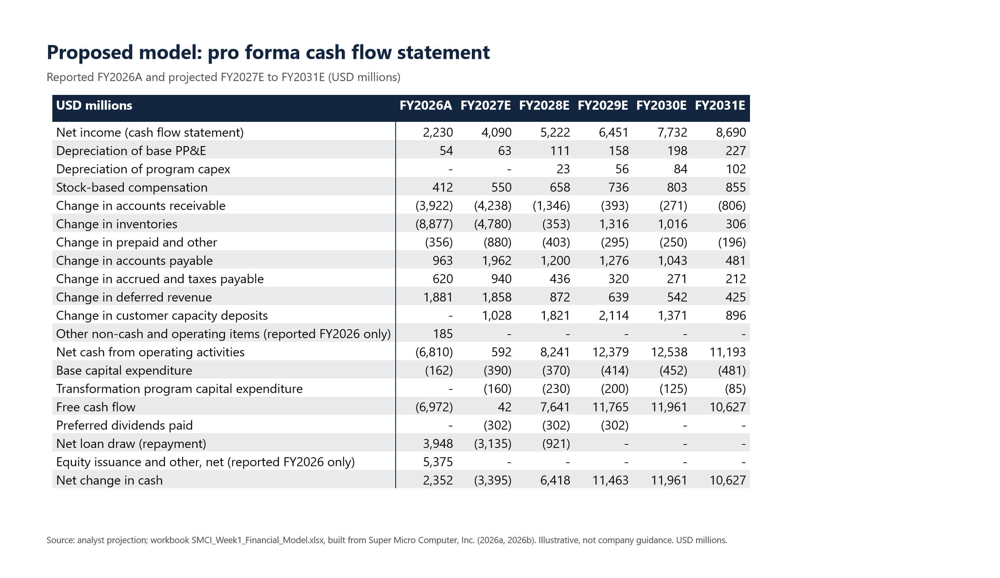
Analysis. Deposit inflows and inventory discipline move operating cash flow from negative USD 6.8 billion in FY2026A to positive USD 0.6 billion in FY2027E and USD 8.2 billion in FY2028E. Inventory becomes a source of cash from FY2029E onward. No share repurchases or dividends on common stock are assumed, so cash accumulates in the statements.
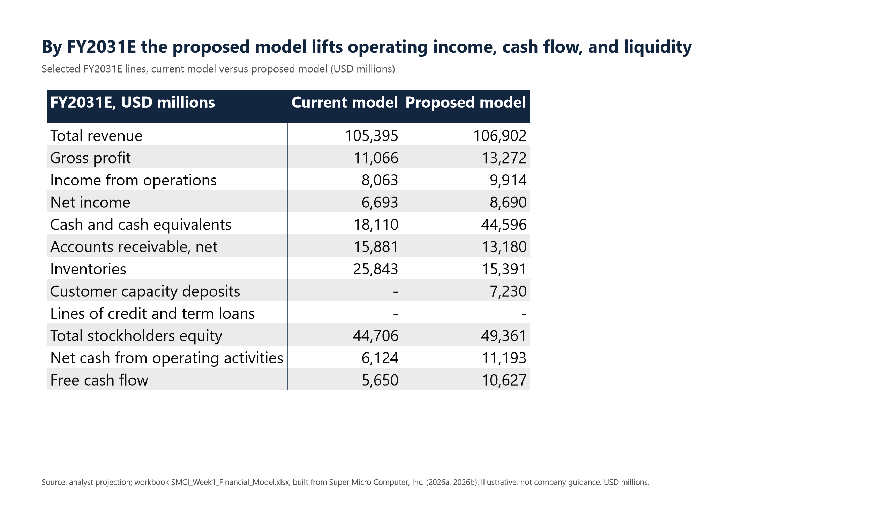
Analysis. The proposed model produces higher FY2031E revenue (USD 106.9 billion versus USD 105.4 billion), income from operations (USD 9.9 billion versus USD 8.1 billion), and free cash flow (USD 10.6 billion versus USD 5.7 billion), with USD 10.5 billion less inventory.
Advantages Quantified
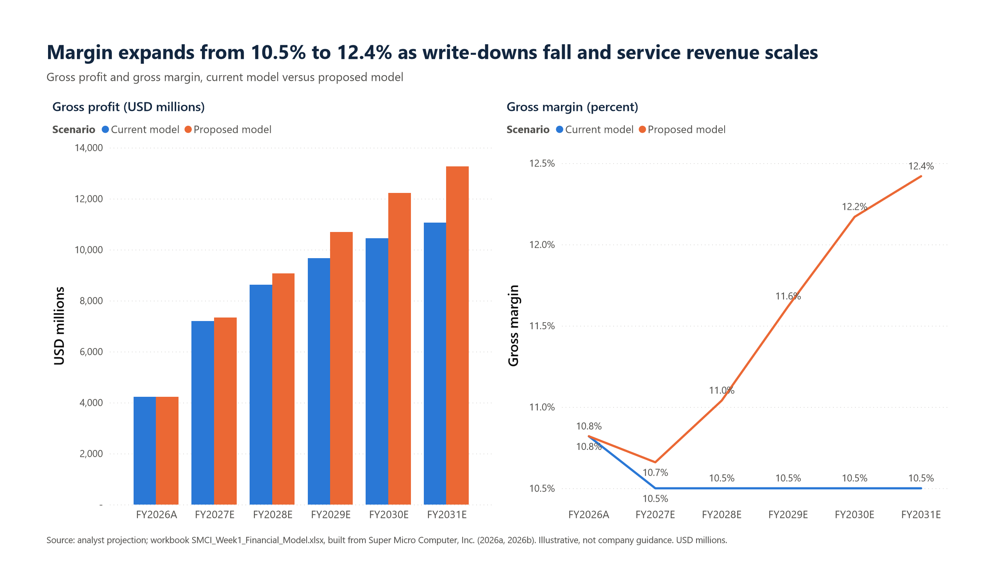
Analysis. Total gross margin rises from 10.5% under the current model to 12.4% under the proposed model by FY2031E. The improvement arrives gradually because reservation coverage and service scale build over several years.
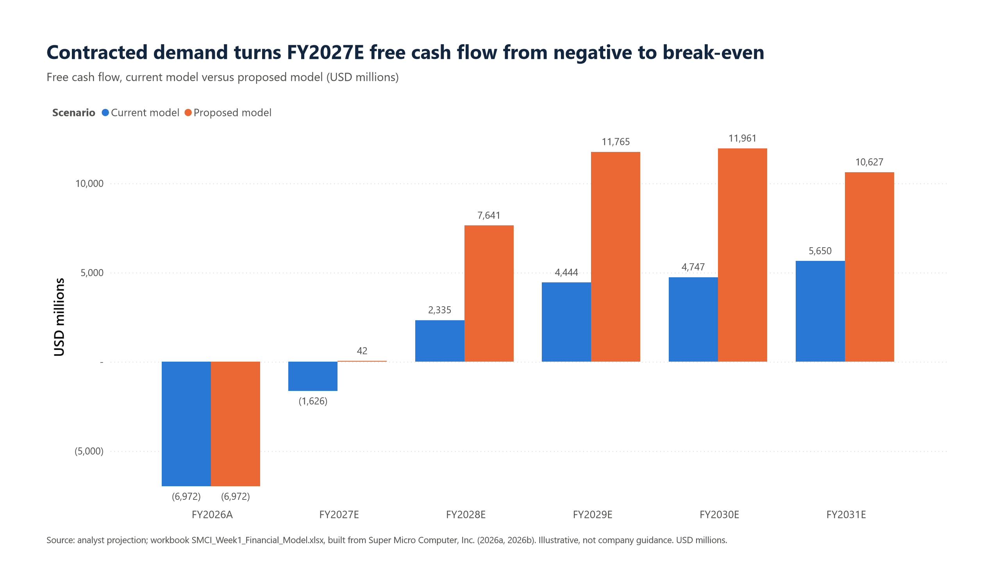
Analysis. FY2027E free cash flow improves from negative USD 1.6 billion to approximately break-even. Cumulative five-year free cash flow totals USD 42.0 billion under the proposed model and USD 15.6 billion under the current model, a difference of USD 26.5 billion.
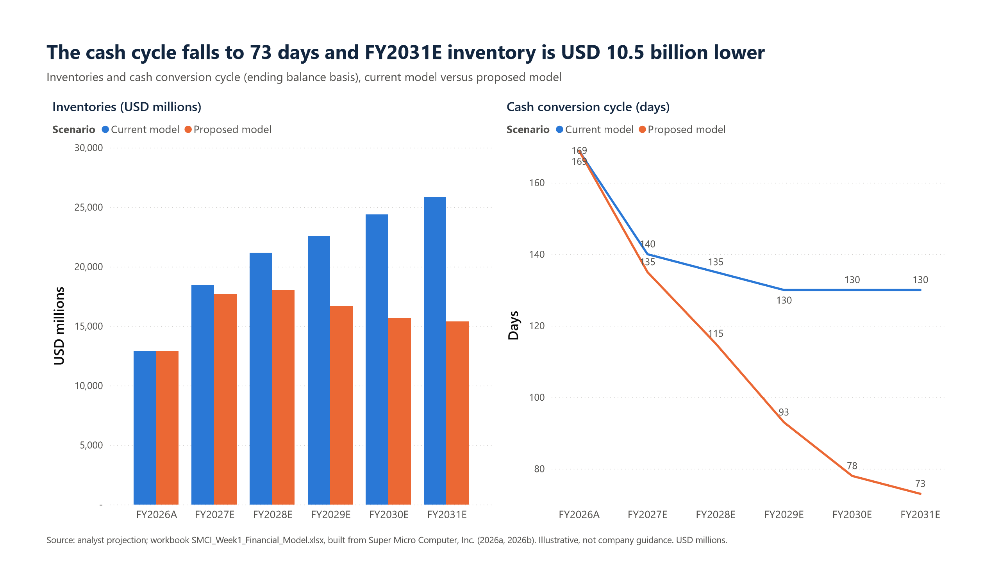
Analysis. The cash conversion cycle falls to 73 days under the proposed model, compared with 130 days under the current model. S1 is the shortcoming most directly addressed by the redesign.
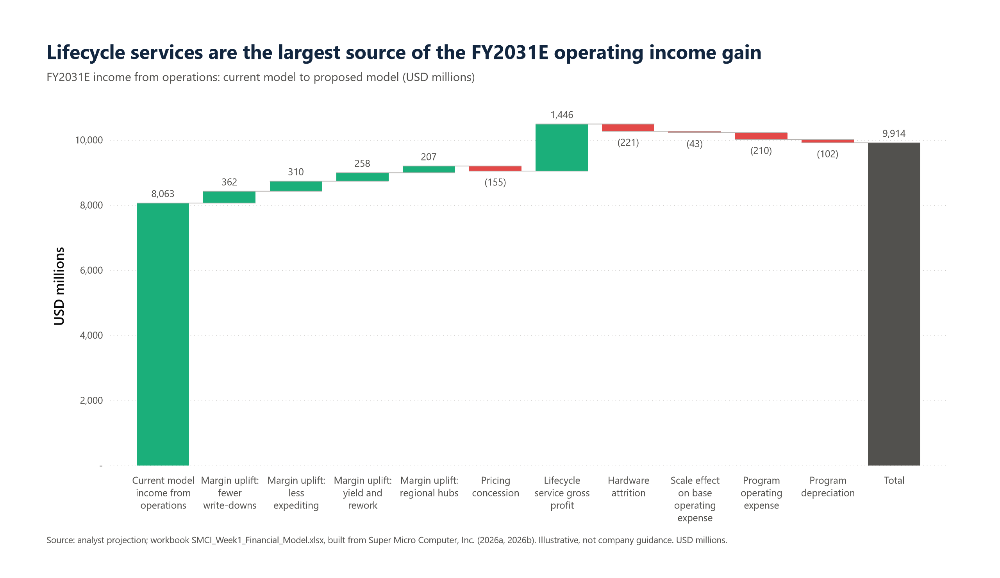
Analysis. Income from operations rises by USD 1.85 billion. Lifecycle services contribute USD 1.45 billion, and four margin drivers contribute USD 1.14 billion: fewer write-downs, less expediting, better yield, and regional hubs. Pricing concessions, hardware attrition, program operating expense, depreciation, and scale effects together subtract USD 0.73 billion. The first bar in the chart represents the current-model starting point rather than a gain.
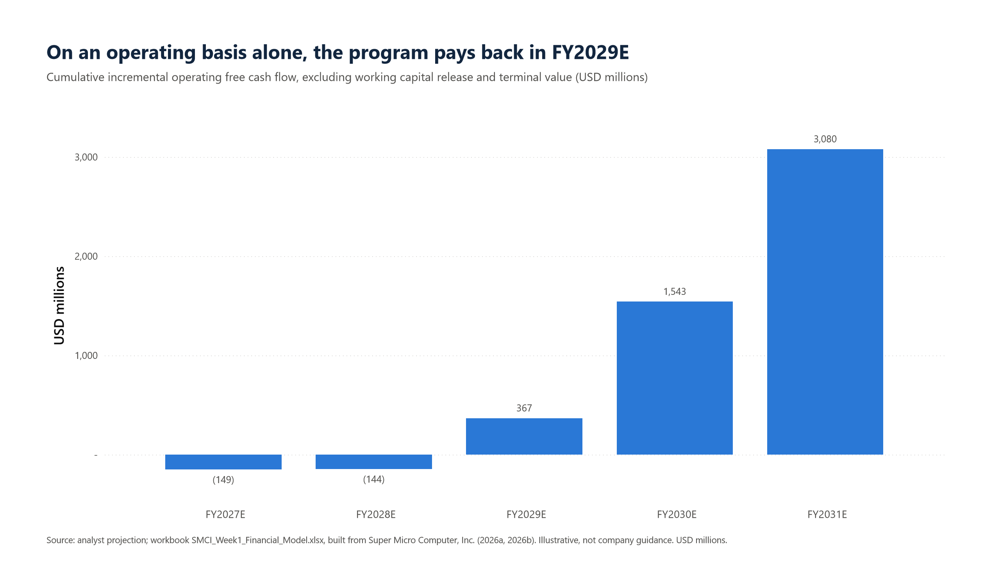
Analysis. Return measures isolate operating effects by excluding working capital release and terminal value. On that conservative basis, the program pays back in FY2029E, with a net present value (NPV) of USD 1.9 billion at an 11% discount rate and a peak cumulative outlay of USD 149 million. The 178% internal rate of return should be read with caution, because the outlay stays small relative to later inflows and the base case assumes full benefit delivery. NPV including working capital reaches USD 18.9 billion, but only USD 3.1 billion of the USD 26.5 billion cumulative cash advantage comes from operating effects. The remainder largely reflects working capital and customer deposits, which are timing and funding benefits rather than earnings, and deposits remain refundable obligations until performance occurs.
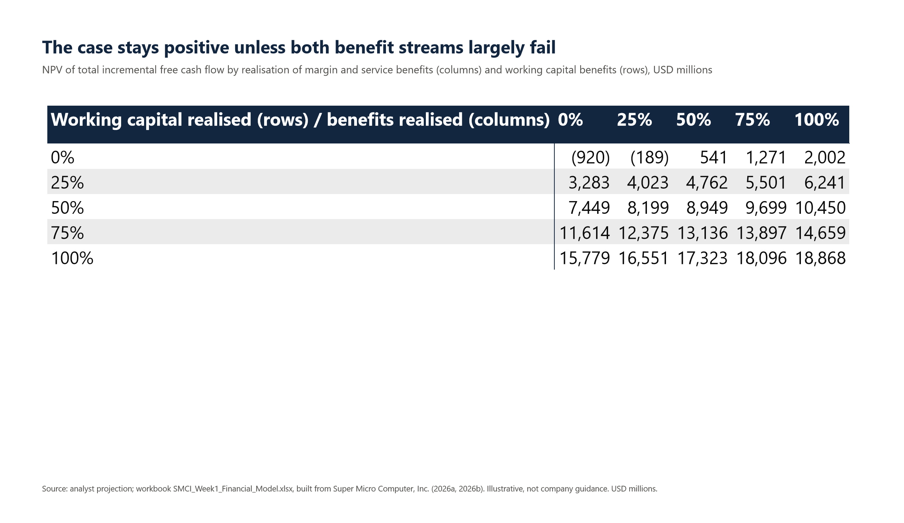
Analysis. The stress test applies independent realization factors to margin and service benefits and to working capital benefits. NPV turns negative only when working capital benefits fail entirely and margin and service benefits reach 25% or less of plan. On the operating basis alone, NPV breaks even at approximately 39% benefit realization, and 50% realization still pays back in FY2030E. The case therefore tolerates substantial underdelivery, although failure of both benefit streams would leave a net cost.
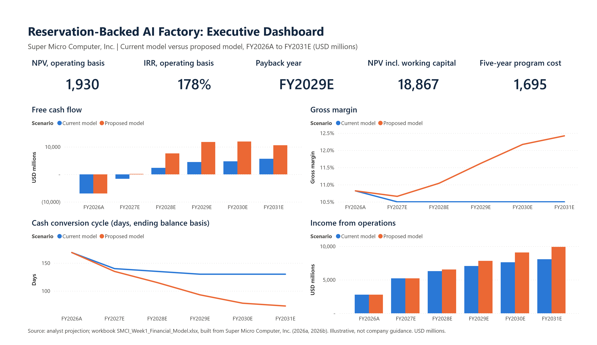
Analysis. The executive dashboard consolidates the five-year transformation economics: operating-basis NPV of USD 1.93 billion, an operating-basis IRR of 178%, FY2029E payback, and total program cost of USD 1.695 billion. Free cash flow, gross margin, cash conversion cycle, and operating income are compared across both scenarios. All projections remain illustrative and are not company guidance.
Foundation for Subsequent Phases
The proposed model establishes four workstreams for development in later project phases:
- Sales and customers. Target segments for capacity agreements include neoclouds, sovereign AI programs, and enterprise AI factories, with channel customers remaining on purchase orders.
- Manufacturing. Regional hub design, takt planning, and vendor-managed kitting.
- Human capital. Staffing for trade compliance, site readiness engineering, control tower operations, and field lifecycle services.
- Technology and data. Capacity ledger, site digital twin, and fleet telemetry platforms, with Power BI reporting extended to operational measures.